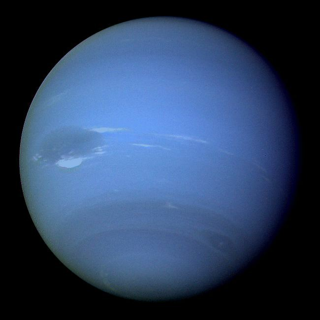

Mercury is the first planet from the Sun and the smallest planet in the Solar System. It is the first of the
four inner system planets. Mercury has the
smallest tilt on its axis of any of the solar system planets. Its surface temperatures range from -280
°F
during the night to 800 °F during the day, which is the largest range in the solar system.
Venus is the second planet from the Sun. It is sometimes called the sister planet of Earth because it's
almost as large and has a similar composition. Venus is the brightest natural object in Earth's sky, visible
to the naked eye in broad daylight. Venus rotates on its axis backwards and like Mercury, Venus has no
moons. Venus is also known as the Morning Star and the Evening Star. It orbits the sun every 244.7 earth
days.
Earth is the third planet from the Sun and is thee largest of the four terrestrial (inner) planets. The
Earth is actually the only planet in the Solar System not to be named after a Greek or Roman deity. It was
once believed that Earth was the center of the universe due to the relative movements of the Sun and planets
in the sky.
Earth's Moon is the largest natural satellite of any planet in the Solar System. We should know a lot about
Earth, because it's the planet we live on!
Mars is the fourth planet from the Sun and the second smallest planet in the solar system. Mars is also
called the "Red Planet" due to its reddish appearance. Mars' thin atmosphere is mostly composed of carbon
dioxide. Mars has two small moons, Phobos and Deimos. The larger moon, Phobos, will be torn apart in the
next 20-40 million years by gravitational forces to create a ring around Mars. One year on Mars lasts 687
Earth days.
Jupiter is the fifth planet from the Sun and the largest planet in the Solar System. It is two and a half
times more massive than all the other planets combined. It is known as a "gas giant" because it is primarily
composed of gases. The ancient Babylonians were the first to record sightings of Jupiter in the
7th or 8th century BC. It has the shortest day of all thee planets lasting around 10
hours. Jupiter has 79 moons, and its moon Ganymede is the largest moon in the solar system. The surface
temperature on Jupiter is -162.4 °F.

Saturn is the sixth planet from the Sun and is best known for its system of rings. Saturn is a gas giant
like Jupiter, composed of gasses including hydrogen, helium, and methane though it is mostly made of
hydrogen. Saturn is the most distant planet that can be seen with the naked eye. It is the flattest planet,
with the short axis only 90% of the long axis. Saturn orbits the Sun once every 29.4 Earth years and has 82
moons, 3 more than Jupiter and the most of any planet in the Solar System.
Uranus is the seventh planet from the Sun. Uranus is not visible to the naked eye, and it became the first
planet discovered by the use of a telescope. It is often described as "rolling around the Sun on its side"
due to its high axial tilt of 98 degrees. Uranus was discovereed by Sir William Herschel in 1781, being too
dim to have been seen by ancient societies. It is often referred to as an "ice giant" due to its icy mantle
below the hydrogen upper layer that it has in common with the other gas giants. Uranus is the coldest of the
planets in the solar system with surface temperatures of -319 °F.

Neptune is the eighth planet from the Sun, making it the most distant in the Solar System. It is the
smallest gas giant, and may have formed much closer to the Sun in the early days of the Solar System before
migrating out to its current position. Neptune spins on its axis very rapidly, taking 16 hours to make one
rotation. In the time it takes for Neptune to orbit the Sun once, the Earth orbits 165 times. Neptune has 14
moons and is an astonishing 2,795,173,959 miles from the Sun.
